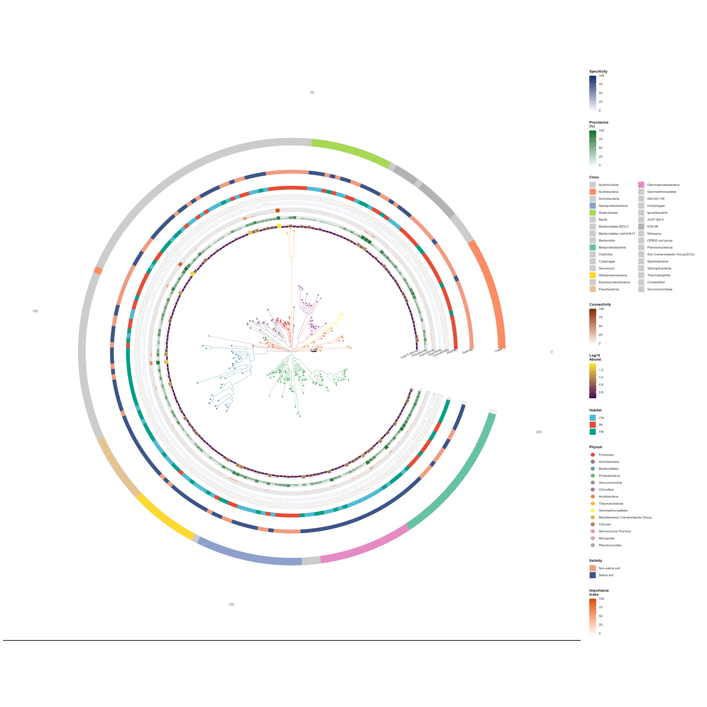
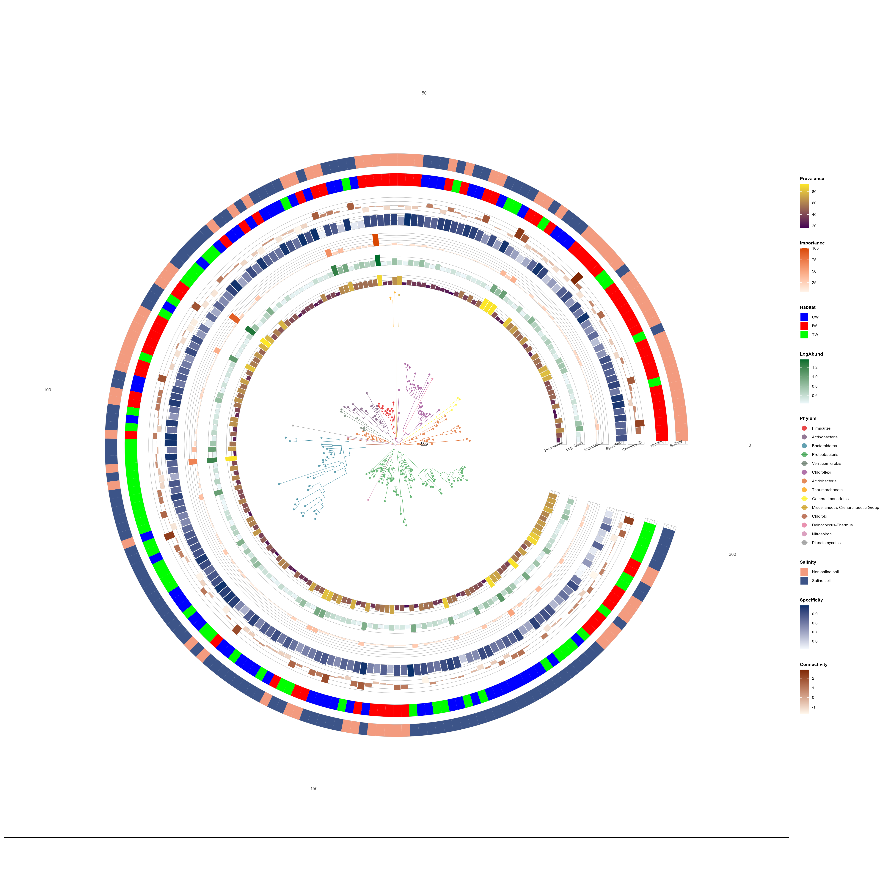

Chapter 8 trans_niche and trans_phylo
Starting from version 2.3.0, two new classes have been added: trans_niche and trans_phylo. The trans_niche class is used to calculate niche breadth and niche overlap. The trans_phylo class relies on the ggtree package to visualize phylogenetic trees of ASVs/OTUs/Species and annotate attributes on the outer layers of trees. Demonstrations are provided using sample datasets herein.
library(microeco)
library(magrittr)
library(ggtree)
library(ggtreeExtra)
library(ggplot2)
library(ape)
library(RColorBrewer)
mt <- clone(dataset)
mt200 <- clone(mt)
# Subset to top 200 OTUs
top_otus <- names(sort(mt200$taxa_sums(), decreasing = TRUE))[1:200]
mt200$otu_table %<>% .[top_otus, ]
mt200$tidy_dataset()
# ========================================================================
# Build rich ring annotation data
# ========================================================================
otu <- mt200$otu_table
tax <- mt200$tax_table
si <- mt200$sample_table
n_otus <- nrow(otu)
# Relative abundance (mean %)
total_rel_abund <- trans_norm$new(mt)$norm(method = "TSS")$otu_table
rel_abund <- total_rel_abund[rownames(otu), ]
mean_abund <- rowMeans(rel_abund) * 100
# Prevalence (% of samples where detected)
prevalence <- rowMeans(otu > 0) * 100
# Log10 abundance
log_abund <- log10(rowMeans(otu) + 1)
# ---- Simulated ecological indicators ----
# Importance index: composite of abundance and prevalence
# (mimics indicators like indicator species analysis or random forest importance)
importance_raw <- mean_abund * sqrt(prevalence / 100)
importance <- round(importance_raw / max(importance_raw, na.rm = TRUE) * 100, 2)
# Specificity: how concentrated is an OTU in its preferred habitat; Use niche breadth value from trans_niche class
# (low = generalist, high = specialist)
niche <- trans_niche$new(mt)$cal_niche_breadth()
specificity <- 1 - niche$res_niche_breadth[rownames(otu), "Levins_Standardized"]
# network metrics with trans_network class example
net <- trans_network$new(mt, cor_method = "pearson")$cal_network()$get_node_table()
centrality <- net$res_node_table[rownames(otu), "closeness_centrality"]
connectivity <- net$res_node_table[rownames(otu), "z"]
# Habitat
mt$add_rownames2tax("OTU")
mt$cal_abund()
mt_diff <- trans_diff$new(dataset = mt, method = "rf", taxa_level = "OTU", group = "Group", alpha = 1)
mt_diff_res <- mt_diff$res_diff
rownames(mt_diff_res) %<>% gsub(".*\\|", "", .)
dominant_habitat <- mt_diff_res[rownames(otu), "Group"]
# Salinity
mt_diff <- trans_diff$new(dataset = mt, method = "rf", taxa_level = "OTU", group = "Saline", alpha = 1)
mt_diff_res <- mt_diff$res_diff
rownames(mt_diff_res) %<>% gsub(".*\\|", "", .)
dominant_salinity <- mt_diff_res[rownames(otu), "Group"]
# Class taxonomy
class_col <- if ("Class" %in% colnames(tax)) tax$Class else rep("Unknown", n_otus)
# Assemble ring data
ring_df <- data.frame(
label = rownames(otu),
RelAbund = round(mean_abund, 4),
Prevalence = round(prevalence, 1),
LogAbund = round(log_abund, 3),
Importance = importance,
Specificity = specificity,
Connectivity = connectivity,
Habitat = dominant_habitat,
Salinity = dominant_salinity,
Class = class_col,
stringsAsFactors = FALSE
)
# Clean Class column
ring_df$Class <- gsub("^c__", "", ring_df$Class)
ring_df$Class[ring_df$Class == "" | is.na(ring_df$Class)] <- "Unclassified"
# ============================================================================
# Create trans_phylo object and plot tree
# ============================================================================
OPEN_ANGLE <- 18 # degrees — slightly wider opening for ring label text
pviz <- trans_phylo$new(
dataset = mt200,
group_col = "Phylum",
group_prefix_remove = "p__",
ring_data = ring_df,
color_palette = NULL,
clade_coloring = TRUE
)
pviz$plot_tree(
open_angle = OPEN_ANGLE,
branch_size = 0.15,
tip_point_size = 1.2,
tip_point_shape = 21,
tip_point_stroke = 0.1,
tip_point_alpha = 0.80,
legend_title = "Phylum"
)# ============================================================================
# Add ring layers
# ============================================================================
# Two approaches are shown below:
# (A) Individual add_ring() calls — maximum per-ring control
# (B) Batch add_rings_batch() with vector parameters — concise alternative
# ============================================================================
# ---------- Approach A: Individual add_ring() calls ----------
# ---------- Numeric rings ----------
# Ring 1: Log10 Abundance — viridis-style purple-to-yellow
pviz$add_ring(
col_name = "LogAbund",
geom = "bar",
ring_width = 0.038,
ring_offset = 0.012,
color_low = "#440154",
color_high = "#FDE725",
na_fill = "grey95",
legend_title_custom = "Log10\nAbund.",
ring_label = "Log10 Abund."
)
# Ring 2: Prevalence (%) — green gradient
pviz$add_ring(
col_name = "Prevalence",
geom = "bar",
color_low = "#EDF8FB",
color_high = "#006D2C",
limits = c(0, 100),
na_fill = "grey95",
legend_title_custom = "Prevalence\n(%)",
ring_label = "Prevalence"
)
# Ring 3: Ecological Importance — orange-red gradient
pviz$add_ring(
col_name = "Importance",
geom = "bar",
color_low = "#FFF5EB",
color_high = "#D94801",
limits = c(0, 100),
na_fill = "grey95",
legend_title_custom = "Importance\nIndex",
ring_label = "Importance"
)
# Ring 4: Habitat Specificity — blue gradient
pviz$add_ring(
col_name = "Specificity",
geom = "bar",
color_low = "#F7FBFF",
color_high = "#08306B",
limits = c(0, 100),
na_fill = "grey95",
legend_title_custom = "Specificity"
)
# Ring 5: Network Connectivity — warm gradient
pviz$add_ring(
col_name = "Connectivity",
geom = "bar",
color_low = "#FFF7EC",
color_high = "#7F2704",
limits = c(0, 100),
na_fill = "grey95",
legend_title_custom = "Connectivity"
)
# ---------- Categorical rings ----------
# Ring 6: Habitat preference
pviz$add_ring(
col_name = "Habitat",
na_fill = "grey95",
legend_title_custom = "Habitat",
categorical_colors = c("IW" = "#E64B35", "CW" = "#4DBBD5", "TW" = "#00A087")
)
# Ring 7: Salinity preference
pviz$add_ring(
col_name = "Salinity",
ring_offset = 0.1,
na_fill = "grey95",
legend_title_custom = "Salinity",
categorical_colors = c(
"Non-saline soil" = "#F39B7F",
"Saline soil" = "#3C5488"
)
)
# Ring 8: Class taxonomy
class_counts <- sort(table(ring_df$Class), decreasing = TRUE)
top_classes <- names(class_counts)[1:min(8, length(class_counts))]
other_classes <- setdiff(names(class_counts), top_classes)
n_top <- length(top_classes)
class_pal <- c(
brewer.pal(max(3, n_top), "Set2")[1:n_top],
rep("grey80", length(other_classes))
)
names(class_pal) <- c(top_classes, other_classes)
pviz$add_ring(
col_name = "Class",
ring_width = 0.06,
ring_offset = 0.2,
na_fill = "grey95",
legend_title_custom = "Class",
categorical_colors = class_pal
)
# ============================================================================
# Auto-label all rings at the fan opening
# ============================================================================
# Now fully automated via add_ring_labels() — no manual geometry table needed.
# The ring geometry (offset, width) is automatically tracked by add_ring().
pviz$add_ring_labels(size = 1.8, color = "grey25")
pviz$add_scale_bar(x = 0.2, y = 0, label = "0.05")
# ============================================================================
# Apply publication theme and save
# ============================================================================
pviz$theme_publication(base_size = 7)
pviz$save_plot(
"Phylotree_addring.png",
width = 16,
height = 16,
dpi = 300
)
# ---------- Approach B: Equivalent batch call with vector parameters ----------
# The code below produces the same 5 numeric rings as Approach A above,
# but in a single add_rings_batch() call with per-ring vector parameters.
#
pviz <- trans_phylo$new(
dataset = mt200,
group_col = "Phylum",
group_prefix_remove = "p__",
ring_data = ring_df,
clade_coloring = TRUE
)
pviz$plot_tree(
open_angle = OPEN_ANGLE,
branch_size = 0.15,
tip_point_size = 1.2,
tip_point_shape = 21,
tip_point_stroke = 0.1,
tip_point_alpha = 0.80,
legend_title = "Phylum"
)
pviz$add_rings_batch(
col_names = c("LogAbund", "Prevalence", "Importance", "Specificity", "Connectivity", "Habitat", "Salinity"),
numeric_geom = "bar",
ring_offset = 0.05,
color_low = c("#440154", "#EDF8FB", "#FFF5EB", "#F7FBFF", "#FFF7EC"),
color_high = c("#FDE725", "#006D2C", "#D94801", "#08306B", "#7F2704"),
categorical_palette = list(Habitat = c("IW" = "red", "CW" = "blue", "TW" = "green"), Salinity = c("Non-saline soil" = "#F39B7F", "Saline soil" = "#3C5488")),
show_legend = TRUE
)
pviz$add_scale_bar(x = 0.2, y = 0, label = "0.05")
pviz$add_ring_labels(size = 1.8, color = "grey25")
pviz$theme_publication(base_size = 7)
pviz$save_plot(
"Phylotree_addringbatch.png",
width = 16,
height = 16,
dpi = 300
)